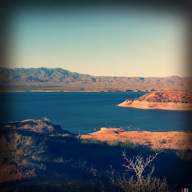

Recovered weblog entry
Theodore Roosevelt's Lake

Call me crazy, but I believe old Theodore deserves a better body of water.
Maybe when Yellowstone blows sky-high, we can fill up the crater and call it good.
Lens: Tejas
Film: Blanko Freedom11